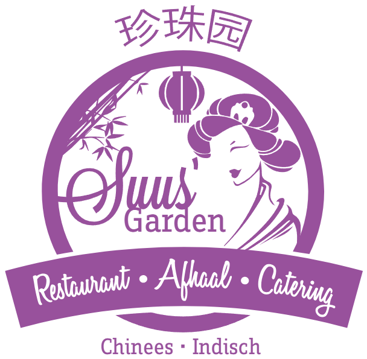
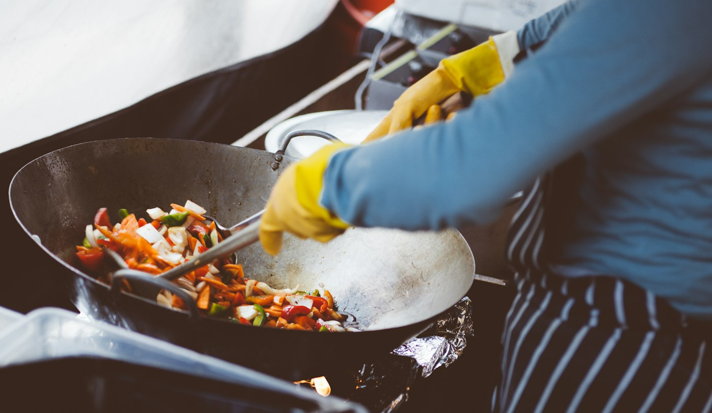
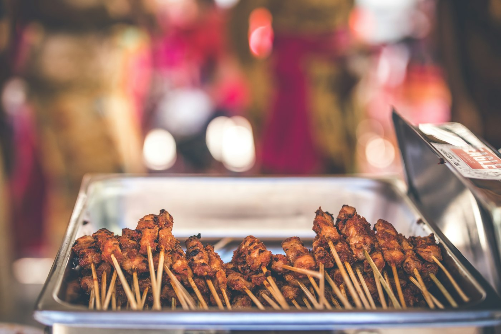
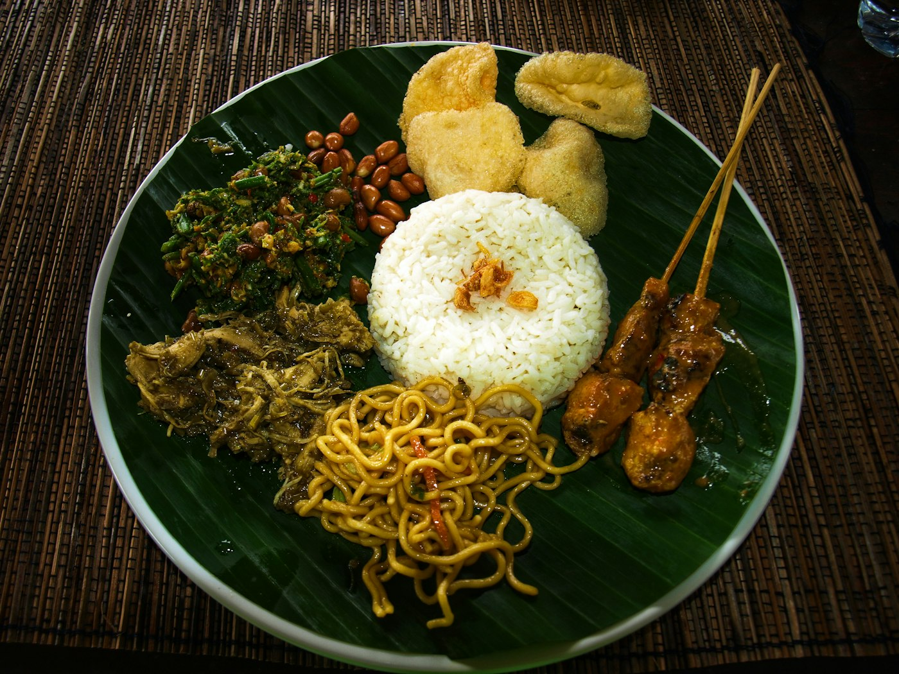
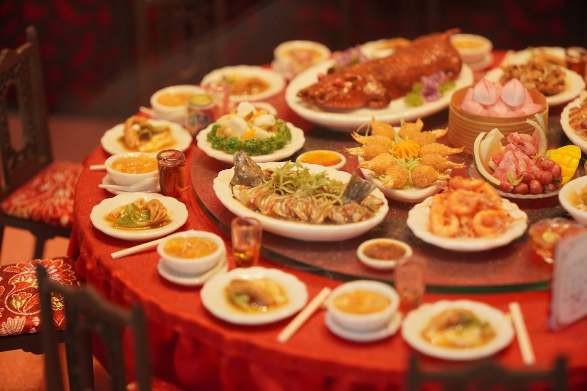

Restaurant
Kies uit de vaste kaart met Chinese specialiteiten, Indische gerechten en vijf rijsttafels. Speciale wensen? Zeg het ons.
Bekijk de restaurantkaart
Suus' Garden BestelChinees en Indisch restaurant, afhaal en catering op de markt in Zaltbommel.
Openingstijden
In ons sfeervolle Oosters ingerichte restaurant in de Bommelerwaard ontvangen wij u in een huiselijke sfeer. U kiest uit de vaste menukaart, of u haalt onze Oosterse specialiteiten snel af. En voor een feest of bijeenkomst verzorgen wij de catering.
Kies uit de vaste kaart met Chinese specialiteiten, Indische gerechten en vijf rijsttafels. Speciale wensen? Zeg het ons.
Bekijk de restaurantkaart
Bestel telefonisch, via WhatsApp of online en reken veilig af. Uw bestelling is doorgaans binnen 30 minuten klaar.
Bekijk de afhaalkaart
Een warm buffet voor kleine en grote feesten, privé en zakelijk, vanaf 20 personen. Binnen 30 km rond Zaltbommel.
Alles over cateringAfhaal maandmenu november
Compleet voor € 30,00
Het menu kan tegen meerprijs aangepast worden. Iedere maand een nieuwe aanbieding.
Bestel het maandmenuEenpersoonsmenu's, standaard met witte rijst. Voor nasi, bami of frites wordt € 1,00 extra in rekening gebracht.
Kom ook in ons restaurant genieten van onze voordeelmenu's, of kies uit de tweede kaart met verrukkelijke hapjes en alle gerechten van de afhaalkaart.
Vijf rijsttafels in het restaurant, van Cantonees tot Indisch. Om samen van te delen.

Exclusief, voor 2 personen
Wan tan soep, Chinese loempia, Pa Tsang eend, King dou kai, Te pang ha (Chinese garnalen in lichte knoflooksaus), nasi, bami of rijst, ijs met fruit of koffie
€ 58,50
Voor 2 personen
Sun la soep, Chinese loempia, Tipan kai, ossenhaas in Szechuan stijl (pittig gekruid), Forlaam (gebakken spek), nasi, bami of rijst, ijs met fruit of koffie
€ 58,50
Voor 2 personen *
Kroepoek, daging smoor, babi pangang, ajam ketjap, pisang goreng, saté, gon bao kai (kip in lichtpikante saus), atjar
€ 40,50
Voor 2 personen *
Kroepoek, tomatensoep, babi pangang, koe loe yuk, saté, foe yong hai, gepaneerde garnalen, hui kou kai (kipfilet met groente in pittige shichuan saus)
€ 40,50
Voor 4 personen *
Tomatensoep, Chinese loempia's, babi pangang, foe yong hai, hete kip, saté, ajam ketjap, daging smoor, gado gado, pisang goreng, koe loe yuk, atjar
€ 82,00
* Geserveerd met witte rijst. Meerprijs voor nasi of bami € 1,00, voor mihoen of Chinese bami € 4,00. Liever thuis? De afhaalkaart heeft zes eigen rijsttafels, vanaf € 20,50 voor 1 persoon. Bekijk de afhaalrijsttafels

Voor particulieren, maar ook voor bedrijfsfeesten en vergaderingen. Wij bezorgen binnen 30 km rond Zaltbommel en zorgen dat de gerechten ruim op tijd bij u zijn. Uw feest of evenement wordt tot in de puntjes verzorgd met heerlijke buffetten.
€ 15,00 p.p.
Warm buffet voor kleine en grote feesten, privé en zakelijk, vanaf 20 personen.
Kies 7 hoofdgerechten en 2 voorgerechten uit de lijst. Gerechten zijn standaard met nasi of bami, en de kroepoek is gratis. Vanaf 50 personen kunt u 1 gerecht extra bijnemen.
Vanaf 5 kinderen, € 5,00 p.p.: kinderfrites, mix snacks en fritessaus.
Op feestdagen hebben wij speciale menu's, om in het restaurant te eten of mee te nemen. Wilt u bijvoorbeeld met kerst zelf niet in de keuken staan? Dan maken onze koks de heerlijkste gerechten voor u, voor een onvergetelijke kerst.
| Maandag | Gesloten |
|---|---|
| Dinsdag | 16:00 tot 20:00 |
| Woensdag | 16:00 tot 20:00 |
| Donderdag | 16:00 tot 20:00 |
| Vrijdag | 16:00 tot 20:00 |
| Zaterdag | 12:00 tot 20:30 |
| Zondag | 12:00 tot 20:30 |
| Feestdagen | 12:00 tot 20:30 |
Op maandag zijn wij gesloten, met uitzondering van feestdagen. Bestel op zondag en op feestdagen één uur vooraf, dan weet u zeker dat uw bestelling op tijd klaar is. Een lunchbestelling? Bel, bestel online of stuur een appje.